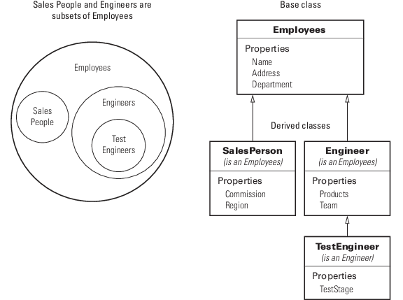

Hierarchies of Classes — Concepts
Classification
Organizing classes into hierarchies facilitates the reuse of code and the reuse of solutions to design problems that have already been solved. You can think of class hierarchies as sets — supersets (referred to as superclasses or base classes), and subsets (referred to as subclasses or derived classes). For example, the following picture shows how you could represent an employee database with classes.

The root of the hierarchy is the Employees class. It contains data and operations that apply to the set of all employees. Contained in the set of employees are subsets whose members, while still employees, are also members of sets that more specifically define the type of employee. Subclasses like TestEngineer are examples of these subsets.
Develop the Abstraction
Classes are representations of real world concepts or things. When designing a class, form an abstraction of what the class represents. Consider an abstraction of an employee and what are the essential aspects of employees for the intended use of the class. Name, address, and department can be what all employees have in common.
When designing classes, your abstraction contains only those elements that are necessary. For example, the employee hair color and shoe size certainly characterize the employee, but are probably not relevant to the design of this employee class. Their sales region is relevant only to some employee so this characteristic belongs in a subclass.
Design of Class Hierarchies
As you design a system of classes, put common data and functionality in a superclass, which you then use to derive subclasses. The subclasses inherit the data and functionality of the superclass and define only aspects that are unique to their particular purposes. This approach provides advantages:
Avoid duplicating code that is common to all classes.
Add or change subclasses at any time without modifying the superclass or affecting other subclasses.
If the superclass changes (for example, all employees are assigned a number), then the subclass automatically get these changes.
Super and Subclass Behavior
Subclass objects behave like objects of the superclass because they are specializations of the superclass. This fact facilitates the development of related classes that behave similarly, but are implemented differently.
A Subclass Object “Is A” Superclass Object
You can usually describe the relationship between an object of a subclass and an object of its superclass with a statement like:
The subclass is a superclass. For example: An Engineer is an Employee.
This relationship implies that objects belonging to a subclass have the same properties, methods, and events as the superclass. Subclass objects also have any new features defined by the subclass. Test this relationship with the isa function.
Treat Subclass Objects like Superclass Objects
You can pass a subclass object to a superclass method, but you can access only those properties that the superclass defines. This behavior enables you to modify the subclasses without affecting the superclass.
Two points about super and subclass behavior to keep in mind are:
Methods defined in the superclass can operate on subclass objects.
Methods defined in the subclass cannot operate on superclass objects.
Therefore, you can treat an Engineer object like any other Employees object, but an Employee object cannot pass for an Engineer object.
Limitations to Object Substitution
MATLAB® determines the class of an object based on its most specific class. Therefore, an Engineer object is of class
Engineer, while it is also an Employees object, as using the isa function reveals.
Generally, MATLAB does not allow you to create arrays containing a mix of superclass and subclass objects because an array can be of only one class. If you attempt to concatenate objects of different classes, MATLAB looks for a converter method defined by the less dominant class
See Concatenating Objects of Different Classes for more information.
See matlab.mixin.Heterogeneous for information on defining heterogeneous class hierarchies.
See Object Converters for information on defining converter methods.
Implementation and Interface Inheritance
MATLAB classes support both the inheritance of implemented methods from a superclass and the inheritance of interfaces defined by abstract methods in the superclass.
Implementation inheritance enables code reuse by subclasses. For example, an employee class can have a submitStatus method that all employee subclasses can use. Subclasses can extend an inherited method to provide specialized functionality, while reusing the common aspects. See Modify Inherited Methods for more information on this process.
Interface inheritance is useful in these cases:
You want a group of classes to provide a common interface.
Subclasses create specialized implementations of methods and properties.
Create an interface using an abstract class as the superclass. This class defines the methods and properties that you must implement in the subclasses, but does not provide an implementation.
The subclasses must provide their own implementation of the abstract members of the superclass. To create an interface, define methods and properties as abstract using their Abstract attribute. See Abstract Classes and Class Members for more information and an example.